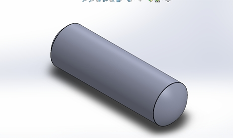
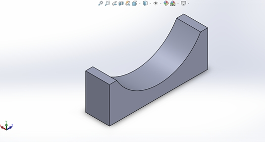
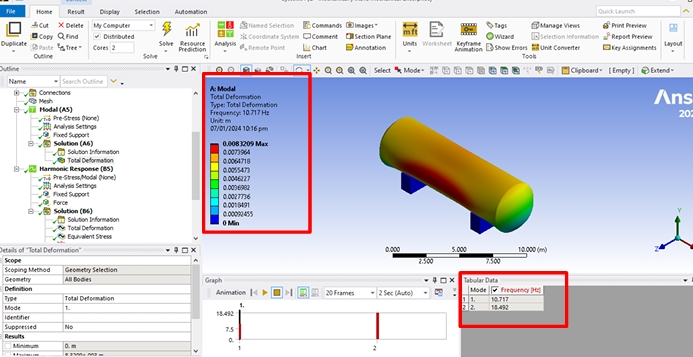
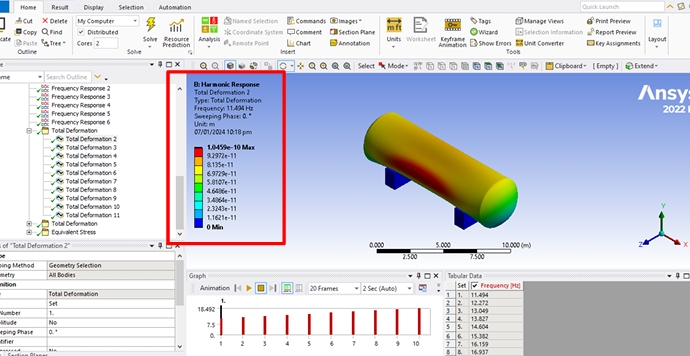
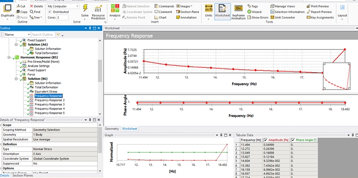

Project Overview
This Complex Engineering Problem (CEP) involved designing a horizontal pressure vessel with two saddle-plate supports in SolidWorks, then conducting full vibration analysis in ANSYS Mechanical. The vessel operates at 15 bar design pressure with Stainless Steel 316L — chosen for corrosion resistance and vibration damping properties. As the team's design and simulation lead, I built the complete 3D assembly and ran both the modal (free vibration) and harmonic response (forced vibration) simulations.


Challenge
Industrial pressure vessels are routinely subjected to ground and wind vibrations. The challenge was to analytically model the vessel as a 2-DOF system, manually solve for natural frequencies and mode shapes, and then verify the analytical results against ANSYS simulation. The vessel geometry — 12.13 m long, outer diameter 4.05 m, shell thickness 25.79 mm — required careful application of Barlow's formula and thin-shell assumptions to ensure R/t > 10 compliance.

Solution
The 2-DOF equations of motion were assembled using the mass and stiffness matrices of the vessel-saddle system. Eigenvalue analysis yielded analytical natural frequencies of 10.9 Hz and 19.5 Hz. In ANSYS, a modal analysis with fixed supports on the saddle bases confirmed frequencies of 10.717 Hz and 18.492 Hz — errors of 5% and 8% respectively. Harmonic response analysis was then performed using a wind-derived excitation force of 3.49 N (extracted via FFT of wind speed data), sweeping across the frequency range to map amplitude response, equivalent von Mises stress, and phase angle at each step.

